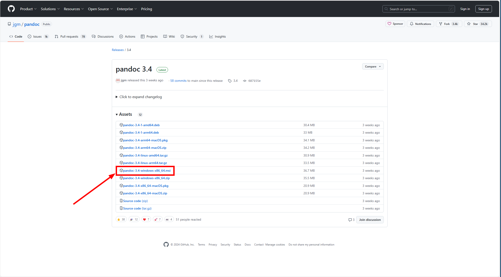

Różne - inne pytania i problemy¶
Gdy próbuję wyciągnąć jakąś kolumnę z DataFrame dostaję błąd KeyError¶
Podczas tworzenia kolumny z ilością mężczyzn w aplikacji prezentującej dane z półmaratonu wrocławskiego, otrzymuję błąd KeyError: Płeć:
W tym przypadku błąd KeyError wskazuje na brak kolumny Płeć w Twoim DataFrame.
-
Błąd taki może wystąpić, gdy próbujesz odwołać się do kolumny, która nie istnieje w Twoim DataFrame. Upewnij się, że nazwa kolumny jest poprawna i zgodna z nazwą kolumny w Twoim DataFrame. Możesz sprawdzić nazwy kolumn w DataFrame, korzystając z metody
columns:df.columns -
Może to wynikać również z faktu, że dane zostały wczytane z pliku .csv z domyślnym separatorem - przecinkiem (
,), podczas gdy plik ten używa separatorów w postaci średników (;). Upewnij się, że na końcu poleceniapd.read_csvdodałeś argumentsep=";", aby poprawnie określić separator danych:
Mapa cieplna wyświetla się bez wartości numerycznych¶
Problem występuje podczas generowania mapy cieplnej w bibliotece seaborn - wizualizacja jest tworzona poprawnie, ale brakuje na niej wartości numerycznych w poszczególnych komórkach:
Przyczyna:
Brak wartości numerycznych w mapie cieplnej wynika z wykorzystywania starszej wersji biblioteki seaborn.
Rozwiązanie:
-
Wykonaj poniższą komendę w komórce notebooka, aby zaktualizować bibliotekę
seaborn:!pip install --upgrade seaborn -
Po zakończeniu instalacji zrestartuj kernel Jupyter, aby zmiany zostały zastosowane.
-
Uruchom ponownie kod tworzący mapę cieplną - wartości numeryczne powinny się teraz wyświetlać poprawnie.
Błąd JSONDecodeError podczas uruchamiania aplikacji Streamlit¶
Problem występuje podczas uruchamiania aplikacji Streamlit. System wyświetla komunikat błędu:
json.decoder.JSONDecodeError: Expecting value: line 1 column 1 (char 0)
Przyczyna:
Błąd wynika z konfliktu wersji biblioteki ffmpeg z innymi zależnościami w projekcie. Nowsze wersje ffmpeg mogą powodować niekompatybilność z komponentami multimedialnymi Streamlit.
Rozwiązanie:
-
Upewnij się, że masz aktywne odpowiednie środowisko wirtualne.
-
Zainstaluj kompatybilną wersję biblioteki
ffmpegza pomocąconda:conda install -c conda-forge ffmpeg=6.1.1 -
Zamknij wszystkie otwarte instancje VS Code i Jupyter Notebook.
-
Uruchom ponownie środowisko programistyczne.
-
Uruchom ponownie aplikację Streamlit.
Uwaga: W przypadku utrzymywania się problemów spróbuj zainstalować najnowszą wersję biblioteki ffmpeg:
conda install -c conda-forge ffmpeg
Błąd AttributeError: 'ThreadLocalVariable' object has no attribute 'copy' podczas uruchamiania PyCareta¶
Problem występuje podczas inicjalizacji środowiska PyCareta za pomocą funkcji setup(). Błąd ma postać:
AttributeError: 'ThreadLocalVariable' object has no attribute 'copy'

Przyczyna:
Błąd wynika z konfliktów między wersjami bibliotek mlflow i PyCaret, które korzystają z niekompatybilnych wersji zależności.
Rozwiązanie:
-
Upewnij się, że masz aktywne odpowiednie środowisko wirtualne.
-
Zainstaluj kompatybilną wersję biblioteki
mlflowza pomocąconda:conda install -c conda-forge mlflow=2.16.2 -
Po instalacji zamknij wszystkie otwarte instancje VS Code i Jupyter, a następnie uruchom je ponownie, aby zmiany zostały prawidłowo zastosowane.
-
Uruchom ponownie komórkę z funkcją
setup()w PyCaret.
Uwaga: W przypadku utrzymywania się problemów spróbuj zaktualizować biblioteki MLflow i PyCaret do najnowszych wersji:
pip install --upgrade mlflow pycaret
Błąd generated_jit w bibliotece Numba¶
Problem występuje podczas uruchamiania komórki notebooka w Jupyter Lab. System wyświetla komunikat błędu:
AttributeError: module 'numba' has no attribute 'generated_jit'
Przyczyna:
Błąd wynika z użycia niekompatybilnej wersji biblioteki numba. Atrybut generated_jit został usunięty w nowszych wersjach Numba, co powoduje konflikt z kodem lub innymi bibliotekami oczekującymi starszej wersji.
Rozwiązanie:
-
Upewnij się, że masz aktywne odpowiednie środowisko wirtualne.
-
Zainstaluj kompatybilną wersję biblioteki
numba:pip install numba==0.58.1 -
Zrestartuj kernel Jupyter.
-
Uruchom ponownie komórkę z błędem.
Uwaga: W przypadku utrzymywania się problemów spróbuj zaktualizować bibliotekę Numba do najnowszej wersji:
pip install --upgrade numba
Problemy z wyświetlaniem interaktywnych widgetów Jupyter¶
Problem występuje podczas używania interaktywnych elementów (widgetów) w Jupyter Notebook/Lab. Widgety mogą nie wyświetlać się poprawnie lub wyświetlać komunikaty o błędach.


Przyczyna:
Błąd wynika z nieaktualnej lub niekompatybilnej wersji biblioteki ipywidgets, która jest odpowiedzialna za renderowanie interaktywnych elementów w środowisku Jupyter. Może to być spowodowane:
- Konfliktem wersji między
ipywidgetsa środowiskiem Jupyter - Brakiem odpowiednich rozszerzeń w Jupyter
- Problemami z JavaScript w przeglądarce
Rozwiązanie:
-
Upewnij się, że masz aktywne odpowiednie środowisko wirtualne.
-
Zaktualizuj bibliotekę
ipywidgetsdo najnowszej wersji:pip install --upgrade ipywidgets -
Zrestartuj kernel Jupyter i odśwież przeglądarkę.
-
Uruchom ponownie komórkę z widgetami.
Dodatkowe rozwiązania:
Jeżeli problem nadal występuje, to możesz spróbować:
- Wyczyścić cache przeglądarki i cookies dla localhost.
- Uruchomić notebook w trybie incognito przeglądarki.
- Uruchomić notebook w innej przeglądarce.
Błąd PyArrow w Streamlit¶
Problem występuje podczas uruchamiania aplikacji Streamlit używającej niestandardowych komponentów. System wyświetla komunikat błędu:
streamlit.errors.StreamlitAPIException: To use Custom Components in Streamlit, you need to install PyArrow.

Przyczyna:
Błąd występuje, gdy aplikacja Streamlit próbuje użyć niestandardowych komponentów, ale brakuje biblioteki PyArrow lub została zainstalowana w niekompatybilnej wersji (np. 19.0.1). PyArrow jest wymagana do serializacji danych między aplikacją a komponentami i zapewnia wydajną komunikację w formacie Apache Arrow.
Rozwiązanie:
-
Upewnij się, że masz aktywne odpowiednie środowisko wirtualne.
-
Zainstaluj kompatybilną wersję biblioteki
pyarrow:pip install pyarrow==19.0.0 -
Uruchom ponownie aplikację Streamlit .
Uwaga: W przypadku utrzymywania się problemów spróbuj zainstalować najnowszą wersję biblioteki PyArrow:
pip install --upgrade pyarrow
Błąd proxies w kliencie OpenAI podczas uruchamiania Streamlit¶
Problem występuje podczas uruchamiania aplikacji Streamlit wykorzystującej bibliotekę OpenAI. System wyświetla komunikat błędu:
TypeError: Client.__init__() got an unexpected keyword argument 'proxies'
Przyczyna:
Błąd występuje z powodu niekompatybilności między wersjami biblioteki openai. W starszych wersjach biblioteki OpenAI konstruktor klasy Client akceptował argument proxies, który został usunięty w nowszych wersjach. Problem może wystąpić gdy:
- Aplikacja używa starszego API OpenAI z nowszą wersją biblioteki
- Kod zawiera przestarzałe parametry inicjalizacji klienta
- Występuje konflikt między zależnościami projektu
Rozwiązanie:
-
Upewnij się, że masz aktywne odpowiednie środowisko wirtualne.
-
Zaktualizuj bibliotekę
openaido najnowszej wersji:pip install --upgrade openai -
Jeśli używasz starszego kodu, sprawdź dokumentację OpenAI i zaktualizuj inicjalizację klienta:
# Stary sposób (może powodować błąd) client = openai.Client(proxies=...) # Nowy sposób (zalecany) client = openai.Client() -
Uruchom ponownie aplikację Streamlit:
streamlit run nazwa_aplikacji.py
Uwaga: W przypadku utrzymywania się problemów sprawdź czy wszystkie zależności są zaktualizowane i zgodne z najnowszą wersją OpenAI API.
Błąd DataFrameSchema w bibliotece Pandera¶
Problem występuje podczas próby użycia DataFrameSchema z biblioteki Pandera. System wyświetla komunikat błędu:
AttributeError: module 'pandera' has no attribute 'DataFrameSchema'
Dodatkowo podczas importu biblioteki Pandera może pojawić się ostrzeżenie:
UserWarning: Pandas and numpy have been removed from the base pandera dependencies.
Please install pandas as part of your environment's dependencies or install the pandas extra with:
pip install pandas pandera
# or
pip install 'pandera[pandas]'

Przyczyna:
Błąd występuje z powodu zmian w strukturze biblioteki Pandera w nowszych wersjach. Od określonej wersji biblioteki pandas i numpy nie są automatycznie instalowane jako podstawowe zależności Pandera, co powoduje:
- Brak dostępu do klasy
DataFrameSchema - Problemy z importowaniem komponentów związanych z DataFrames
- Niekompatybilność między wersjami Pandera a środowiskiem
Rozwiązanie:
-
Upewnij się, że masz aktywne odpowiednie środowisko wirtualne.
-
Zainstaluj starszą wersję Pandera (0.22.1):
3. Zrestartuj kernel Jupyter lub uruchom ponownie aplikację.pip install pandera==0.22.1
Błąd TypeError: 'module' object is not callable przy użyciu getpass w Jupyter¶
Problem pojawia się przy wczytywaniu np. klucza OpenAI w notebooku:
openai_key = getpass("Wprowadź swój klucz OpenAI: ")
TypeError: 'module' object is not callable
Przyczyna: Prawdopodobnie kernel „gubi” import między komórkami — nazwa getpass dla modułu i funkcji jest taka sama i zostaje nadpisana przez moduł.
Rozwiązanie:
-
Przenieś import
getpassdo komórki, w której chcesz używać funkcjigetpass.Czyli w tym przypadku do komórki, w której wczytujesz klucz OpenAI. Docelowo komórka powinna wyglądać tak:
from getpass import getpass openai_key = getpass("Wprowadź swój klucz OpenAI: ") -
Zrestartuj kernel i uruchom notebook od początku, aby wyczyścić poprzednie definicje.
Błąd AttributeError: 'Langfuse' object has no attribute 'trace' w Langfuse¶
Przyczyna: Zmiany pomiędzy wersjami Langfuse. Część metod (np. trace) nie jest dostępna w nowszych wydaniach, co powoduje niezgodność z istniejącym kodem.
Rozwiązanie: Zainstaluj sprawdzoną wersję biblioteki zgodną z Twoim kodem i uruchom środowisko ponownie.
-
Aktywuj właściwe środowisko wirtualne (domyślnie w kursie jest to
od_zera_do_ai):conda activate od_zera_do_ai -
Zainstaluj rekomendowaną wersję Langfuse:
pip install langfuse==2.51.4 -
Sprawdź zainstalowaną wersję, powinna być równa
2.51.4:pip show langfuse -
Jeżeli wszystko jest ok, to zrestartuj kernel Jupyter/VS Code i uruchom ponownie notebook.
Gdy próbuję eksportować notebooka do PDF dostaję błąd nbconvert failed: Pandoc wasn't found¶
Jeżeli próbujesz wyeksportować notebooka do PDF i dostajesz błąd:

Wówczas będziemy musieli zainstalować dwie biblioteki: pandoc oraz MikTeX.
Aby zainstalować pandoc:
- Przechodzimy na stronę https://pandoc.org/installing.html
- I wykonujemy następujące kroki:



Aby zainstalować MikTeX:
- Przechodzimy na stronę https://miktex.org/download
- I wykonujemy następujące kroki:


- Uruchamiamy ponownie
Anaconda Prompt, następniejupyter labi próbujemy ponownie wyeksportować notebooka do PDF. W tym momencie zostaniemy poproszeni o doinstalowanie dodatkowych pakietów, klikamyInstall: